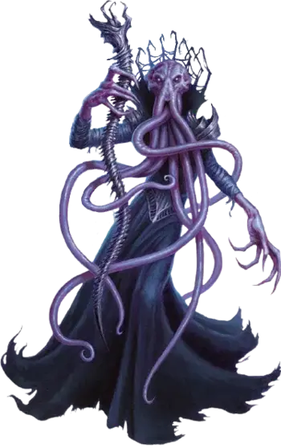

Улитарид
Ulitharid
Большая Аберрация (Свежеватель разума), обычно законно-злая

Класс Доспеха 15 (кираса)
Хиты 127 (17к10 + 34)
Скорость 30 футов
| мод | спас | ||
|---|---|---|---|
| СИЛ | 15 | +2 | +2 |
| ЛОВ | 12 | +1 | +1 |
| ТЕЛ | 15 | +2 | +2 |
| мод | спас | ||
|---|---|---|---|
| ИНТ | 21 | +5 | +9 |
| МДР | 19 | +4 | +8 |
| ХАР | 21 | +5 | +9 |
Навыки Восприятие +8, Магия +9, Проницательность +8, Скрытность +5
Чувства тёмное зрение 120 футов, пассивное Восприятие 18
Языки Глубинная речь, Подземный, Телепатия 2 мили
Опасность 9 (5000 опыта)
Бонус мастерства +4
Среда обитания Подземье
Особенности
Чувство существ. Улитарид знает о присутствии существ в радиусе 2 миль от себя, чей Интеллект 4 или выше. Он знает расстояние и направление до каждого существа, а так же значение параметра Интеллект, но больше ничего не может почувствовать. Существо, защищенное заклинанием сокрытие разума [mind blank], необнаружимость [nondetection] или похожей магией, он почувствовать не может.
Сопротивление магии. Улитарид обладает преимуществом к спасброскам против заклинаний и других магических эффектов.
Псионический концентратор. Если старший мозг устанавливает псионическую связь с улитаридом, старший мозг может сформировать психическую связь с любым другим существом, которого сможет обнаружить улитарид с помощью Чувства существ. Любая подобная связь оканчивается в том случае, если существо выходит из досягаемости телепатии улитарида и старшего мозга. Улитарид может поддерживать связь со старшим мозгом вне зависимости от расстояния между ними, пока они оба находятся на одном плане существования. Если улитарид находится на расстоянии более чем 5 миль от старшего мозга, он может окончить психическую связь в любой момент (действия для этого не требуется).
Действия
Щупальца. . Рукопашная атака оружием: +9 к попаданию, досягаемость 10 футов, одна цель. Попадание: 27 (4к10 + 5) урона психической энергией. Если цель Большого размера или меньше, она становится схваченной (Сл высвобождения 14) и должна преуспеть в спасброске Интеллекта Сл 17, иначе будет ошеломлена до тех пор, пока не закончится захват.
Извлечение мозга. . Рукопашная атака оружием: +9 к попаданию, досягаемость 5 футов, один недееспособный Гуманоид, схваченный улитаридом. Попадание: 55 (10к10) колющего урона. Если этот урон снижает хиты цели до 0, улитарид убивает цель, извлекая и пожирая её мозг.
Взрыв разума (Перезарядка 5–6). Улитарид магически излучает психическую энергию в 60 футовом конусе. Каждое существо в этой области должно преуспеть в спасброске Интеллекта Сл 17, иначе получит 31 (4к12+5) урона психической энергией и цель становится ошеломлённой на 1 минуту. Цель может повторять спасбросок в конце каждого своего хода, оканчивая на себе этот эффект в случае успеха.
Использование заклинаний. Улитарид накладывает одно из следующих заклинаний, используя Интеллект в качестве базовой характеристики и без использования материальных компонентов (Сл спасброска от заклинаний 17):
• Неограниченно: обнаружение мыслей [detect thoughts], левитация [levitate];
• 1/день каждое: подчинение чудовища [dominate monster], слабоумие [feeblemind], множественное внушение [mass suggestion], уход в иной мир [plane shift] (только на себя), проекция [project image], наблюдение [scrying], телекинез [telekinesis].
Описание
Очень редко головастик из бассейна соляного раствора старшего мозга превращается в улитарида, более огромного и мощного свежевателя разума, который может похвастаться шестью щупальцами. Иллитиды врождённым образом распознают, что выживание улитарида более важно, чем их собственное. Реакция старшего мозга на восход улитарида бывает разной. В большинстве колоний улитарид становится самым любимым слугой старшего мозга, обличенным властью и могуществом. В других же старший мозг воспринимает улитарида как потенциального соперника в борьбе за власть и манипулирует или подавляет амбиции улитарида соответствующим образом.
Когда улитарид начинает считать разделение власти со старшим мозгом неприемлемым, он уходит из колонии, забирая группу свежевателей разума с собой, и перемещается в другое место, чтобы основать новую колонию. После смерти тела улитарида особый процесс превращает его мозг в новый старший мозг для колонии.
Этот процесс не сработает на мозге улитарида, который умер естественной смертью, так как мозг из–за большого возраста слишком одряхлел для создания старшего мозга. Каждый улитарид владеет псионически усиленным посохом, сделанным из чёрного металла. Когда улитарид готов отдать свою жизнь, он прикрепляет посох к затылку и тот раскалывает его череп и отсеивает осколки, так что мозг можно извлечь. Мозг и посох кладутся в тело улитарида после этого, что вызывает его растворение в ихор. Эта псионически активная слизь помогает начать превращение области в бассейн соляного раствора, который окружает эмбрион старшего мозга.